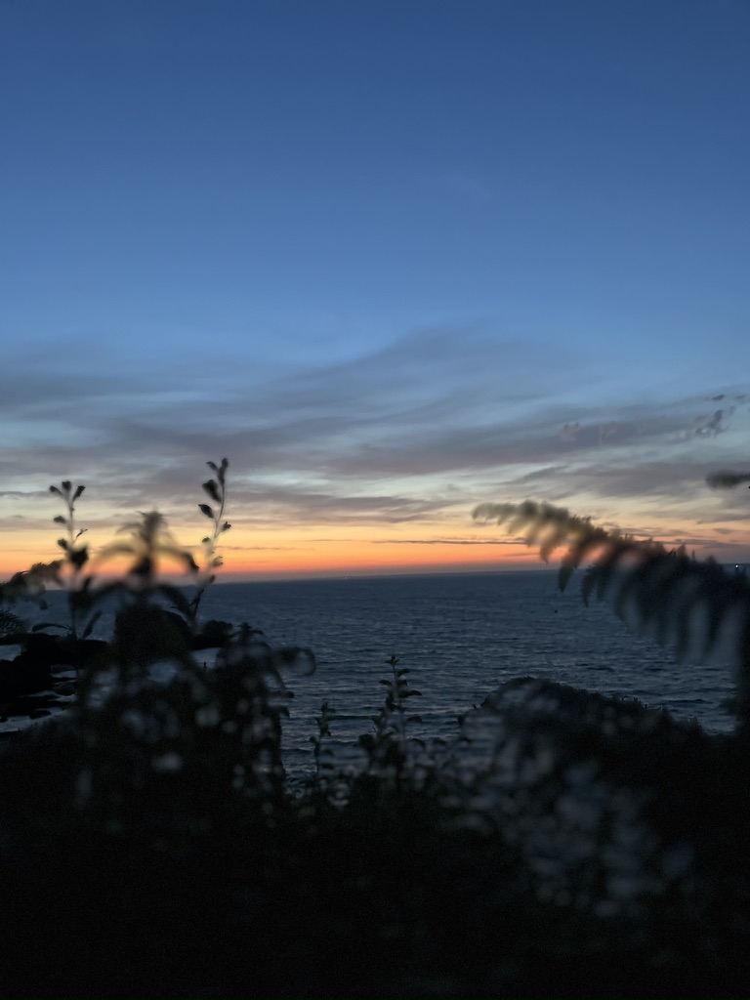

Valorisation d'une structure engagée dans la préservation des milieux.
Contexte
Moderniser sans dénaturer
Le projet consistait à mieux raconter l'association, sans durcir sa parole ni la faire glisser vers une communication trop institutionnelle. Montrer le réel, mais avec plus de tenue.
Direction artistique, sélection et hiérarchie des images.
Installer un ton plus éditorial sans perdre la proximité au terrain.

Une image plus humaine, plus ouverte et mieux hiérarchisée.
Direction
Donner plus d'air à l'image associative
L'enjeu était de sortir du simple descriptif pour aller vers un registre plus sensible, tout en gardant un lien concret avec le territoire et les actions montrées.
- Plus de respiration dans la mise en page et le cadrage.
- Des images de terrain pour crédibiliser le propos.
- Une hiérarchie éditoriale plus nette et plus calme.
Point clé
La modernisation devait rester fidèle aux personnes, aux lieux et au ton réel de l'association.
Ambiances
Deux images qui donnent le ton

Direction artistique, sélection des images et mise en cohérence de la narration visuelle.
Le projet m'a appris à faire dialoguer sobriété graphique, fidélité au terrain et image plus contemporaine.